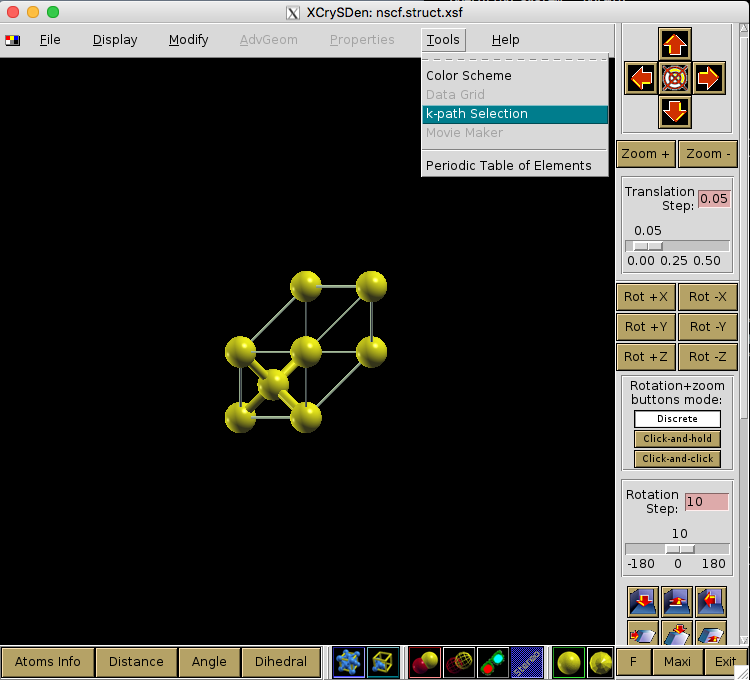

Lab 5: Excited state calculations¶
Topics covered in this lab¶
Tiling DFT primitive cells into optimal QMC supercells
Fundamentals of between neutral and charged calculations
Calculating quasiparticle excitation energies of condensed matter systems
Calculating optical excitation energies of condensed matter systems
Lab directories and files¶
labs/lab5_excited_properties/
├── band.py - Band structure calculation for Carbon Diamond
├── optical.py - VMC optical gap calculation using the tiling matrix from band.py
├── quasiparticle.py - VMC quasiparticle gap calculation using the tiling matrix from band.py
└── pseudopotentials - pseudopotential directory
├── C.BFD.upf - C PP for Quantum ESPRESSO
└── C.BFD.xml - C PP for QMCPACK
The goal of this lab is to perform neutral and charged excitation calculations in condensed matter systems using QMCPACK. Throughout this lab, a working knowledge of Lab4 Condensed Matter Calculations is assumed. First, we will introduce the concepts of neutral and charged excitations. We will briefly discuss these in relation to the specific experimental studies that must be used to benchmark DMC results. Secondly, we will perform charged (quasiparticle) and neutral (optical) excitations calculations on C-diamond.
Basics and excited state experiments¶
Although VMC and DMC methods are better suited for studying ground state properties of materials, they can still provide useful information regarding the excited states. Unlike the applications of band structure theory such as DFT and GW, it is more challenging to obtain the complete excitation spectra using DMC. However, it is relatively straightforward to calculate the band gap minimum of a condensed matter system using DMC.
We will briefly discuss the two main ways of obtaining the band gap minimum through experiments: photoemission and absorption studies. The energy required to remove an electron from a neutral system is called the IP (ionization potential), which is available from direct photoemission experiments. In contrast, the emission energy of a negatively charged system (or the energy required to convert a negatively charged system to a neutral system), known as electron affinity (EA), is available from inverse photoemission experiments. Outlines of these experiments are shown in Fig. 22.
{kind=link}
Fig. 22 Direct and inverse photoemission experiments involve charged excitations, whereas optical absorption experiments involve excitations that are just enough to be excited to the conduction band. From [ORR02]¶
Following the explanation in the previous paragraph and Fig. 22, the quasiparticle band gap of a material can be defined as:
where \(N\) is the number of electrons in the neutral system and \(E_{N}\) is the ground state energy of the neutral system. CBM and VBM stand for the conduction band minimum and valence band maximum, respectively. K’ can formally be arbitrary at the infinite limit. However, in practical calculations, a supertwist that accommodates both CBM and VBM can be more efficient in terms of computational time and systematic finite-size error cancellation. In the literature, the quasiparticle gap is also called the electronic gap. The term electronic comes from the fact that in both photoemission experiments, it is assumed that the perturbed electron is not interacting with the sample.
Additionally, absorption experiments can be performed in which electrons are perturbed at relatively lower energies, just enough to be excited into the conduction band. In absorption experiments, electrons are perturbed at lower energies. Therefore, they are not completely free and the system is still considered neutral. Since a quasihole and quasielectron are formed simultaneously, a bound state is created, unlike the free electron in the quasiparticle gap as described previously. This process is also known as optical excitation, which is schematically shown in Fig. 22, under “Absorption.” The optical gap can be formulated as follows:
where \(E^{K_1 {\rightarrow} K_2}\) is the energy of the system when a valence electron at wavevector \(K_1\) is promoted to the conduction band at wavevector \(K_2\). Therefore, the \(E_g^{K_1 {\rightarrow} K_2}\) is called the optical gap for promoting an electron at \(K_1\) to \(K_2\). If both CBM and VBM are on the same k-vector then the material is called direct band gap since it can directly emit photons without any external perturbation (phonons). However, if CBM and VBM share different k-vectors, then the photon-emitting electron has to transfer some of its momenta to the crystal lattice and then decay to the ground state. As this process involves an intermediate step, this property is called the indirect band gap. The difference between the optical and electronic band gaps is called the exciton binding energy. Exciton binding energy is very important for optoelectronic applications such as lasers. Since the recombination usually occurs between free holes and free electrons, a bound electron and hole state means that the spectrum of emission energies will be narrower. In the examples that follow, we will investigate the optical excitations of C-diamond.
Preparation for the excited state calculations¶
In this section, we will study the preparation steps to perform excited state calculations with QMC. Here, the most basic steps are listed in the implementation order:
Identify the high-symmetry k-points of the standardized primitive cell.
Perform DFT band structure calculation along high-symmetry paths.
Find a supertwist that includes all the k-points of interest.
Identify the indexing of k-points in the supertwist to be used in QMCPACK.
Identifying high-symmetry k-points¶
Primitive cell is the most basic, nonunique repeat unit of a crystal in real space. However, the translations of the repeat unit, the Bravais lattice is unique for each crystal and can be represented using discrete translation operations, \(R_n\):
\(a_n\) are the real-space lattice vectors in three dimensions. Thanks to the periodicity of the Bravais lattice, a crystal can also be represented using periodic functions in the reciprocal space:
where \(G_m\) are called as the reciprocal lattice vectors. (79) also satisfies the equality \(G_m\cdot{R_n}=2{\pi}N\). High-symmetry structures can be represented using a subspace of the BZ, which is called as the irreducible Brillouin Zone (iBZ). If we choose a series of paths of high-symmetry k-points that encapsulates the iBZ, we can determine the band gap and electronic structure of the material. For more discussion, please refer to any solid-state physics textbook.
There are multiple practical ways to find the high-symmetry k-point path. For example, pymatgen, [ORJ+13] XCRYSDEN [Kok99] or SeeK-path [HPK+17] can be used.
Fig. 23 shows the procedure for visualizing the Brillouin Zone using XCRYSDEN after the structure file is loaded. However, the primitive cell is not unique, and the actual shape of the BZ can depend on the structure used. In our example, we use the Python libraries of SeeK-path, using a wrapper written in Nexus.
{kind=link}
{kind=link}
SeeK-path includes routines to standardize primitive cells, which will be useful for our work.
SeeK-path can be installed easily using pip:
>pip install --user seekpath
In the band.py script, identification of high-symmetry k-points and band structure calculations are done within the workflow.
In the script, where the dia PhysicalSystem object is used as the input structure, dia2_structure is the standardized primitive cell and dia2_kpath is the respective k-path around the iBZ.
dia2_kpath has a dictionary of the k-path in various coordinate systems; please make sure you are using the right one.
from structure import get_primitive_cell, get_kpath
dia2_structure = get_primitive_cell(structure=dia.structure)['structure']
dia2_kpath = get_kpath(structure=dia2_structure)
DFT band structure calculation along high-symmetry paths¶
After the high-symmetry k-points are identified, band structure calculations can be performed in DFT.
For an insulating structure, DFT can provide VBM and CBM wavevectors, which would be of interest to the DMC calculations.
However, if available, CBM and VBM from DFT would need to be compared with the experiments.
Basically, band.py will do the following:
Perform an SCF calculation in QE using a high-density reciprocal grid.
Identify the high-symmetry k-points on the iBZ and provide a k-path.
Perform a “band” calculation in QE, explicitly writing all the k-points on the path. (Make sure to add extra unoccupied bands.)
Plot the band structure curves and location of VBM/CBM if available.
In Fig. 24, C-diamond is shown to have an indirect
band gap between the red and green dots (CBM and VBM, respectively). VBM
is located at \(\Gamma\). CBM is not located on a high-symmetry
k-point in this case. Therefore, we can use the symbol \(\Delta\) to
denote the CBM wavevector in the rest of this document. In band.py
script, once the band structure calculation is finished, you can use the
following lines to get the exact location of VBM and CBM using
p = band.load_analyzer_image()
print "VBM:\n{0}".format(p.bands.vbm)
print "CBM:\n{0}".format(p.bands.cbm)
Output must be the following:
VBM:
band_number = 3
energy = 13.2874
index = 0
kpoint_2pi_alat = [0. 0. 0.]
kpoint_rel = [0. 0. 0.]
pol = up
CBM:
band_number = 4
energy = 17.1545
index = 51
kpoint_2pi_alat = [0. 0.1095605 0. ]
kpoint_rel = [0.3695652 0. 0.3695652]
pol = up
{kind=link}
Fig. 24 Band structure calculation of C-diamond performed at the DFT-LDA level. CBMs are shown with red points, and the VBMs are shown with the green points, both at \(\Gamma\). DFT-LDA calculations suggest that the material has an indirect band gap from \(\Gamma\rightarrow{\Delta}\). However, \(\Gamma\rightarrow{\Gamma}\) transition can also be investigated for more complete check.¶
DFT band structure calculation along high-symmetry paths¶
After the high-symmetry k-points are identified, band structure calculations can be performed in DFT.
For an insulating structure, DFT can provide VBM and CBM wavevectors, which would be of interest to the DMC calculations.
However, if available, CBM and VBM from DFT would need to be compared with the experiments.
Basically, band.py will do the following:
Perform an SCF calculation in QE using a high-density reciprocal grid.
Identify the high-symmetry k-points on the iBZ and provide a k-path.
Perform a “band” calculation in QE, explicitly writing all the k-points on the path. (Make sure to add extra unoccupied bands.)
Plot the band structure curves and location of VBM/CBM if available.
In Fig. 24, C-diamond is shown to have an indirect band gap between the red and green dots (CBM and VBM, respectively). VBM is located at \(\Gamma\). CBM is not located on a high-symmetry k-point in this case. Therefore, we can use the symbol \(\Delta\) to denote the CBM wavevector in the rest of this document. In script, once the band structure calculation is finished, you can use the following lines to get the exact location of VBM and CBM using
p = band.load_analyzer_image()
print "VBM:\n{0}".format(p.bands.vbm)
print "CBM:\n{0}".format(p.bands.cbm)
Output must be the following:
VBM:
band_number = 3
energy = 13.2874
index = 0
kpoint_2pi_alat = [0. 0. 0.]
kpoint_rel = [0. 0. 0.]
pol = up
CBM:
band_number = 4
energy = 17.1545
index = 51
kpoint_2pi_alat = [0. 0.1095605 0. ]
kpoint_rel = [0.3695652 0. 0.3695652]
pol = up
Finding a supertwist that includes all the k-points of interest¶
Using the VBM and CBM wavevectors defined in the previous section, we now construct the supertwist, which will hopefully contain both VBM and CBM. In Fig. 25, we provide a simple example using 2D rectangular lattice. Let us assume that we are interested in the indirect transition, \(\Gamma \rightarrow X_1\). In Fig. 25 a, the first BZ of the primitive cell is shown as the square centered on \(\Gamma\), which is drawn using dashed lines. Because of the periodicity of the lattice, this primitive cell BZ repeats itself with spacings equal to the reciprocal lattice vectors: (2\(\pi\)/a, 0) and (0, 2\(\pi\)/a) or (1,0) and (0,1) in crystal coordinates. We are interested in the first BZ, where \(X_1\) is at (0,0.5). In Fig. 25 b, the first BZ of the \(2\times2\) supercell is the smaller square, drawn using solid lines. In Fig. 25 c, the BZ of the \(2\times2\) supercell also repeats in the space, similar to Fig. 25 a. Therefore, in the \(2\times2\) supercell, \(X_1\), \(X_2\), and \(R\) are only the periodic images of \(\Gamma\). The \(2\times2\) supercell calculation can be performed in reciprocal space using a [2,2] tiling matrix. Therefore, individual k-points (twists) of the primitive cell are combined in the supercell calculation, which are then called as supertwists. In more complex primitive cells (hence BZ), more general criteria would be constructing a set of supercell reciprocal lattice vectors that contain the \(\Gamma \rightarrow X_1\) (e.g., \(G_1\) in Fig. 25) vector within their convex hull. Under this constraint, the Wigner-Seitz radius of the simulation cell can be maximized in an effort to reduce finite-size errors.
{kind=link}
Fig. 25 a) First BZ of the primitive cell centered on \(\Gamma\). Dashed lines indicate zone boundaries. b) First BZ of the \(2\times2\) supercell inside the first BZ of the primitive cell. First BZ boundaries of the supercell are shown using solid lines. c) Periodic translations of the first BZ of the supercell showing that \(\Gamma\) and \(X_1\) are periodic images of each other given the supercell BZ.¶
For the case of the indirect band gap in Diamond, several approximations might be needed to generate a supertwist that corresponds to a reasonable simulation cell. In the Diamond band gap, \(\Delta\) is at . In your calculations, the \(\Delta\) wavevector and the eigenvalues you find can be slightly different in value. The closest simple fraction to this number with the smallest denominator is 1/3. If we use \(\Delta'=[1/3, 0., 1/3]\), we could use a \(3\times1\times3\) supercell as the simple choice and include both \(\Delta'\) and \(\Gamma\) in the same supertwist exactly. Near \(\Delta\), the LDA band curvature is very low and using \(\Delta'\) can be a good approximation. We can compare the eigenvalues using their index numbers:
>>> print p.bands.up[51] ## CBM, $\Delta$ ##
eigs = [-3.2076 4.9221 7.5433 7.5433 17.1545 19.7598 28.3242 28.3242]
index = 51
kpoint_2pi_alat = [0. 0.1095605 0. ]
kpoint_rel = [0.3695652 0. 0.3695652]
occs = [1. 1. 1. 1. 0. 0. 0. 0.]
pol = up
>>> print p.bands.up[46] ## $\Delta'$ ##
eigs = [-4.0953 6.1376 7.9247 7.9247 17.1972 20.6393 27.3653 27.3653]
index = 46
kpoint_2pi_alat = [0. 0.0988193 0. ]
kpoint_rel = [0.3333333 0. 0.3333333]
occs = [1. 1. 1. 1. 0. 0. 0. 0.]
pol = up
This shows that the eigenvalues of the first unoccupied bands in \(\Delta\) and \(\Delta'\) are 17.1545 and 17.1972 eV, respectively, meaning that according to LDA, a correction of nearly -40 meV is obtained. After electronic transitions between \(\Gamma\) and \(\Delta'\) are studied using DMC, the LDA correction can be applied to extrapolate the results to \(\Gamma\) and \(\Delta\) transitions.
Identifying the indexing of k-points of interest in the supertwist¶
At this stage, we must have performed an scf calculation using a
converged k-point grid and then an nscf calculation using the
supertwist k-points given previously. We will be using the orbitals from
neutral DFT calculations; therefore, we need to explicitly define the
band and twist indexes of the excitations in QMCPACK (e.g., to define
electron promotion). In C-diamond, we can give an example by finding the
band and twist indexes of \(\Gamma\) and \(\Delta'\). For this
end, a mock VMC calculation can be run and the einspline.tile_300010003 .spin_0.tw_0.g0.bandinfo.dat file read. The Einspline
file prints out the eigenstates information from DFT calculations.
Therefore, we can obtain the band and the state index from this file,
which can later be used to define the electron promotion. You can see in
the following an explanation of how the band and twist indexes are
defined using a portion of the einspline.tile_300010003.spin_0.tw_0.g0.bandinfo.dat file. Spin_0 in the file name suggests
that we are reading the spin-up eigenstates. Band, state, twistindex,
and bandindex numbers all start from zero. We know we have 72 electrons
in the simulation cell, with 36 of them spin-up polarized. Since the
state number starts from zero, state number 35 must be occupied while
state 36 should be unoccupied. States 35 and 36 have the same reciprocal
crystal coordinates (K1,K2,K3) as \(\Gamma\) and \(\Delta'\),
respectively. Therefore, an electron should be promoted from state
number 35 to 36 to study the indirect band gap here.
# Band State TwistIndex BandIndex Energy Kx Ky Kz K1 K2 K3 KmK
33 33 0 1 0.488302 0.0000 0.0000 0.0000 -0.0000 -0.0000 -0.0000 1
34 34 0 2 0.488302 0.0000 0.0000 0.0000 -0.0000 -0.0000 -0.0000 1
35 35 0 3 0.488302 0.0000 0.0000 0.0000 -0.0000 -0.0000 -0.0000 1
36 36 4 4 0.631985 0.0000 -0.6209 0.0000 -0.3333 -0.0000 -0.3333 1
37 37 8 4 0.631985 0.0000 -1.2418 0.0000 -0.6667 -0.0000 -0.6667 1
38 38 0 4 0.691907 0.0000 0.0000 0.0000 -0.0000 -0.0000 -0.0000 1
However, we should always check whether this is really what we want. It can be seen that bands 33, 34, and 35 are degenerate (energy eigenvalues are listed in the 5th column), but they also have the same reciprocal coordinates in (K1,K2,K3). This is actually expected as one can see from Fig. 24, in the band diagram the band structure is threefold degenerate at \(\Gamma\). Here, we can choose the state with the largest band index: (0,3). Following the (twistindex, bandindex) notation, we can say that \(\Gamma\) to \(\Delta'\) transition can be defined as from (0,3) to (4,4).
Alternatively, we can also read the band and twist indexes using PwscfAnalyzer and determine the band/twist indexes on the go:
p = nscf.load_analyzer_image()
print 'band information'
print p.bands.up
print 'twist 0 k-point:',p.bands.up[0].kpoint_rel
print 'twist 4 k-point:',p.bands.up[4].kpoint_rel
print 'twist 0 band 3 eigenvalue:',p.bands.up[0].eigs[3]
print 'twist 4 band 4 eigenvalue:',p.bands.up[4].eigs[4]
Giving output:
0
eigs = [-8.0883 13.2874 13.2874 13.2874 18.8277 18.8277 18.8277 25.9151]
index = 0
kpoint_2pi_alat = [0. 0. 0.]
kpoint_rel = [0. 0. 0.]
occs = [1. 1. 1. 1. 0. 0. 0. 0.]
pol = up
1
eigs = [-5.0893 3.8761 10.9518 10.9518 21.5031 21.5031 21.5361 28.2574]
index = 1
kpoint_2pi_alat = [-0.0494096 0.0494096 0.0494096]
kpoint_rel = [0.3333333 0. 0. ]
occs = [1. 1. 1. 1. 0. 0. 0. 0.]
pol = up
2
eigs = [-5.0893 3.8761 10.9518 10.9518 21.5031 21.5031 21.5361 28.2574]
index = 2
kpoint_2pi_alat = [-0.0988193 0.0988193 0.0988193]
kpoint_rel = [0.6666667 0. 0. ]
occs = [1. 1. 1. 1. 0. 0. 0. 0.]
pol = up
3
eigs = [-5.0893 3.8761 10.9518 10.9518 21.5031 21.5031 21.5361 28.2574]
index = 3
kpoint_2pi_alat = [ 0.0494096 0.0494096 -0.0494096]
kpoint_rel = [0. 0. 0.3333333]
occs = [1. 1. 1. 1. 0. 0. 0. 0.]
pol = up
4
eigs = [-4.0954 6.1375 7.9247 7.9247 17.1972 20.6393 27.3652 27.3652]
index = 4
kpoint_2pi_alat = [0. 0.0988193 0. ]
kpoint_rel = [0.3333333 0. 0.3333333]
occs = [1. 1. 1. 1. 0. 0. 0. 0.]
pol = up
5
eigs = [-0.6681 2.3791 3.7836 8.5596 19.3423 26.2181 26.6666 28.0506]
index = 5
kpoint_2pi_alat = [-0.0494096 0.1482289 0.0494096]
kpoint_rel = [0.6666667 0. 0.3333333]
occs = [1. 1. 1. 1. 0. 0. 0. 0.]
pol = up
6
eigs = [-5.0893 3.8761 10.9518 10.9518 21.5031 21.5031 21.5361 28.2574]
index = 6
kpoint_2pi_alat = [ 0.0988193 0.0988193 -0.0988193]
kpoint_rel = [0. 0. 0.6666667]
occs = [1. 1. 1. 1. 0. 0. 0. 0.]
pol = up
7
eigs = [-0.6681 2.3791 3.7836 8.5596 19.3423 26.2181 26.6666 28.0506]
index = 7
kpoint_2pi_alat = [ 0.0494096 0.1482289 -0.0494096]
kpoint_rel = [0.3333333 0. 0.6666667]
occs = [1. 1. 1. 1. 0. 0. 0. 0.]
pol = up
8
eigs = [-4.0954 6.1375 7.9247 7.9247 17.1972 20.6393 27.3652 27.3652]
index = 8
kpoint_2pi_alat = [0. 0.1976385 0. ]
kpoint_rel = [0.6666667 0. 0.6666667]
occs = [1. 1. 1. 1. 0. 0. 0. 0.]
pol = up
twist 0 k-point: [0. 0. 0.]
twist 4 k-point: [0.3333333 0. 0.3333333]
twist 0 band 3 eigenvalue: 13.2874
twist 4 band 4 eigenvalue: 17.1972
Quasiparticle (electronic) gap calculations¶
In quasiparticle calculations, it is essential to work with reasonably large sized supercells to avoid spurious “1/N effects.” Since quasiparticle calculations involve charged cells, large simulation cells ensure that the extra charge is diluted over the simulation cell. Coulombic interactions are conditionally convergent for neutral periodic systems, but they are divergent for the charged systems. A typical workflow for a quasiparticle calculation includes the following:
Run an SCF calculation in a neutral charged cell with QE using a high-density reciprocal grid.
Choose a tiling matrix that will at least approximately include VBM and CBM k-points.
Run ‘nscf’/‘p2q’ calculations using the tiling matrix.
Run VMC/DMC calculations for the neutral and positively and negatively charged cells in QMCPACK.
Check the convergence of the quasiparticle gap with respect to the simulation cell size.
<particleset name="e" random="yes">
<group name="u" size="36" mass="1.0"> ##Change size to 35
<parameter name="charge" > -1 </parameter>
<parameter name="mass" > 1.0 </parameter>
</group>
...
...
<determinantset>
<slaterdeterminant>
<determinant id="updet" group="u" sposet="spo_u" size="36"> ##Change size to 35
<occupation mode="ground" spindataset="0"/>
</determinant>
<determinant id="downdet" group="d" sposet="spo_d" size="36">
<occupation mode="ground" spindataset="1"/>
</determinant>
</slaterdeterminant>
</determinantset>
Going back to (77), we can see that it is essential to include VBM and CBM wavevectors in the same twist for quasiparticle calculations as well. Therefore, the added electron will sit at CBM while the subtracted electron will be removed from VBM. However, for the charged cell calculations, we may need to make changes in the input files for the fourth step. Alternatively, in the quasiparticle.py file, the changes in the QMC input are shown for a negatively charged system:
qmc.input.simulation.qmcsystem.particlesets.e.groups.u.size +=1
(qmc.input.simulation.qmcsystem.wavefunction.determinantset
.slaterdeterminant.determinants.updet.size += 1)
Here, the number of up electrons are increased by one (negatively charged system), and QMCPACK is instructed to read more one orbital in the up channel from the .h5 file.
QE uses symmetry to reduce the number of k-points required for the calculation.
Therefore, all symmetry tags in QE (nosym, noinv, and nosym_evc) must be set to false.
An easy way to check whether this is the case is to see that all KmK values einspline files are equal to 1.
Previously, the input for the neutral cell is given, while the changes are denoted as comments for the positively charged cell.
Note that we have used det_format = "old" in the vmc_+/-e.py files.
Optical gap calculations¶
Routines for the optical gap calculations are very similar to the quasiparticle gap calculations. The first three items in the quasiparticle band gap calculations can be reused for the optical gap calculations. However, at the VMC/DMC level, the electronic transitions performed should be explicitly stated. Therefore, compared with the quasiparticle calculations, only item number 4 is different for optical gap calculations. Here, the modified input file is given for the \(\Gamma\rightarrow\Delta'\) transition, which can be compared with the ground state input file in the previous section.
<determinantset>
<slaterdeterminant>
<determinant id="updet" group="u" sposet="spo_u" size="36">
<occupation mode="excited" spindataset="0" format="band" pairs="1" >
0 3 4 4
</occupation>
</determinant>
<determinant id="downdet" group="d" sposet="spo_d" size="36">
<occupation mode="ground" spindataset="1"/>
</determinant>
</slaterdeterminant>
</determinantset>
We have used the (twistindex, bandindex) notation in the annihilaion/creation order for the up-spin electrons.
After resubmitting the batch job, in the output, you should be able to see the following lines in the vmc.out file:
Sorting the bands now:
Occupying bands based on (ti,bi) data.
removing orbital 35
adding orbital 36
We will read 36 distinct orbitals.
There are 0 core states and 36 valence states.
And the einspline.tile_300010003.spin_0.tw_0.g0.bandinfo.dat file must be changed in the following way:
# Band State TwistIndex BandIndex Energy Kx Ky Kz K1 K2 K3 KmK
33 33 0 1 0.499956 0.0000 0.0000 0.0000 0.0000 0.0000 0.0000 1
34 34 0 2 0.500126 0.0000 0.0000 0.0000 0.0000 0.0000 0.0000 1
35 35 4 4 0.637231 0.0000 -0.6209 0.0000 -0.3333 0.0000 -0.3333 1
36 36 0 3 0.502916 0.0000 0.0000 0.0000 0.0000 0.0000 0.0000 1
37 37 8 4 0.637231 0.0000 -1.2418 0.0000 -0.6667 0.0000 -0.6667 1
38 38 0 4 0.699993 0.0000 0.0000 0.0000 0.0000 0.0000 0.0000 1
Alternatively, the excitations within Nexus can be defined as shown in the optical.py file:
qmc = generate_qmcpack(
...
excitation = ['up', '0 3 4 4'], # (ti, bi) notation
#excitation = ['up', '-35 + 36'], # Orbital (state) index notation
...
)
- HPK+17
Yoyo Hinuma, Giovanni Pizzi, Yu Kumagai, Fumiyasu Oba, and Isao Tanaka. Band structure diagram paths based on crystallography. Computational Materials Science, 128:140–184, 2017. URL: http://www.sciencedirect.com/science/article/pii/S0927025616305110, doi:10.1016/j.commatsci.2016.10.015.
- Kok99
Anton Kokalj. XCrySDen—a new program for displaying crystalline structures and electron densities. Journal of Molecular Graphics and Modelling, 17(3):176–179, 1999. URL: http://www.sciencedirect.com/science/article/pii/S1093326399000285, doi:10.1016/S1093-3263(99)00028-5.
- ORJ+13
Shyue Ping Ong, William Davidson Richards, Anubhav Jain, Geoffroy Hautier, Michael Kocher, Shreyas Cholia, Dan Gunter, Vincent L. Chevrier, Kristin A. Persson, and Gerbrand Ceder. Python Materials Genomics (pymatgen): A robust, open-source python library for materials analysis. Computational Materials Science, 68:314–319, 2013. URL: http://www.sciencedirect.com/science/article/pii/S0927025612006295, doi:10.1016/j.commatsci.2012.10.028.
- ORR02
Giovanni Onida, Lucia Reining, and Angel Rubio. Electronic excitations: density-functional versus many-body Green’s-function approaches. Reviews of Modern Physics, 74(2):601–659, 2002. doi:10.1103/RevModPhys.74.601.